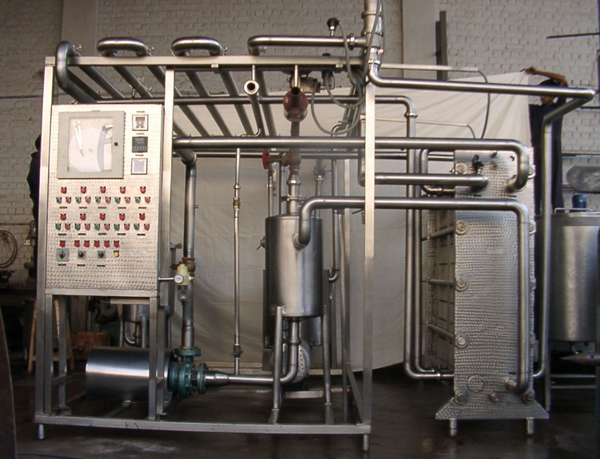

What Are Embedded Computers?
Believe it or not, most devices nowadays contain embedded computers: dishwashers, microwaves, even your car!
Thaaaaaaaaaaaaaaaaaaaaaaaaaaaaaaaaaaaaaaaaaaaaaaaaaaaaaaaaaaats right! WOW! SCIENCE!
But What Embedded Computers are There?
and whats more, some of these devices wouldn't weven be possible without embedded computers running the show!

This is a milk pasteurising machine!
It heats and maintains milk at a very precise temperature for a very long time. It manages to kill the bacteria in the milk while avoiding casuing any cooking chemical reactions to keep the milk tasting fresh!
Imagine a human trying to maintain that precise a temperature for so long a time!